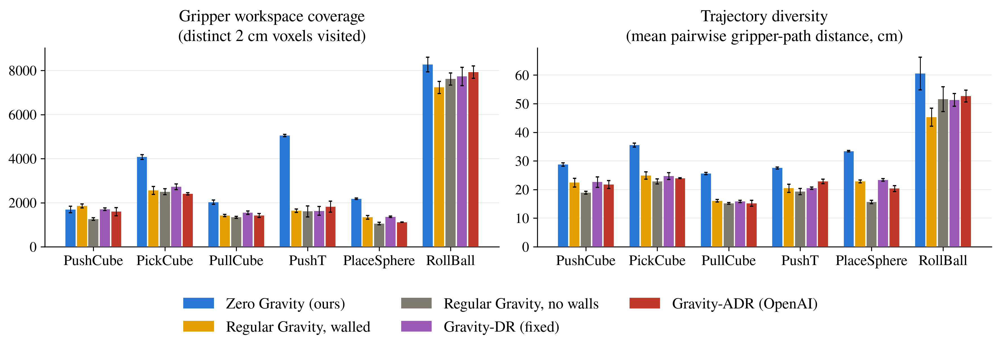
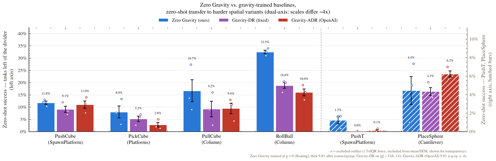

Contributions
Selective containment volumes
A new mechanism that makes learning in zero gravity possible: thin walls that block the floating object but not the robot arm (separate collision groups), and are invisible to cameras. Without them a floating object drifts out of reach and training gets no signal. Task-defining walls can be released on contact or grasp.
implemented · 8 tasks, 2 robotsGravity-on-contact and gravity-on-grasp
In pure zero gravity, policies exploit the floating object instead of learning the skill (reward hacking). We switch gravity on per environment at first contact or at grasp, so the object floats while the robot explores and the task is finished under normal gravity.
implementedZero gravity as a spatial-diversity enhancer, beyond domain randomization
We compare zero gravity with fixed-range gravity randomization (Gravity-DR), with OpenAI's automatic domain randomization applied to gravity (Gravity-ADR (OpenAI)), and with regular gravity with and without walls: same tasks, same PPO recipe, 3 seeds per arm.
done · 6 tasks × 5 arms × 3 seedsAltered gravity as the primary training regime
To our knowledge, the first study of altered gravity as the main training regime for tabletop manipulation, rather than as a robustness perturbation, and of whether the resulting demonstrations improve imitation-learned policies and VLAs.
in progress · VLA distillation ongoingAbstract draft
Vision-language-action models (VLAs) learn from embodied observation-action pairs. Unlike language models, they cannot draw on decades of accumulated internet-scale data, so they rely heavily on simulation, where task diversity is a fundamental constraint. We study physics as an axis of exploration for synthetic embodied data collection, beyond domain randomization.
Existing simulated tabletop manipulation tasks mimic real-world gravity, which restricts the policy's experience to a near-2D slice of the 3D world: objects rest on the table and are approached from a narrow band of heights and directions. By disabling simulated gravity for the object, we lift this constraint. The same task then spans the full 3D volume, exposing the policy to object poses and contact configurations that tabletop episodes never visit. Two mechanisms make this trainable: selective containment volumes, thin walls that keep the floating object within reach without blocking the robot, and gravity that switches on at contact or grasp, which prevents the reward hacking we see in pure zero gravity and leaves the task itself unchanged.
We train reinforcement-learning (PPO) experts this way on 8 ManiSkill3 tasks and compare them with regular gravity and with fixed and adaptive (OpenAI-style) gravity randomization. On spatially harder versions of six tasks, where the object rests on a support at a random height, zero-gravity experts on a stock Franka Panda reach the object in 66% of episodes, against 34–36% for the regular-gravity and gravity-randomized baselines, and touch and grasp it about 1.5× as often. The gap comes from raised objects. At heights inside the zero-gravity training range, which the gravity-trained experts never saw, zero-gravity experts reach the object in 67% of episodes against 17–20% (3.4× the best baseline). Above every arm's training range, only zero-gravity experts reach the object at all (48% of episodes against at most 0.1%). We are now distilling these demonstrations into VLAs, and sim-to-real tests on a Franka Panda with a Robotiq gripper are ongoing.
Method
Zero-gravity training
Each task is a ManiSkill3 tabletop task (Franka arm). We place the object at a random point in a walled 3D volume above the table instead of on the table surface. The walls are thin and collision-only: they keep the object, but not the arm, inside the workspace, and cameras do not see them. Gravity is cancelled per environment by writing an opposing force directly into the GPU physics buffers every step. Three modes are used:
- off: the object floats for the whole episode;
- on-contact: gravity switches on the first time the gripper touches the object;
- on-grasp: gravity switches on once the object is grasped.
Once switched on, gravity stays on for the rest of the episode, so the end of every episode is the ordinary regular-gravity task. Because the object can be anywhere, the PPO expert must learn to approach and manipulate it from many heights and directions. Its success-filtered rollouts become the demonstration dataset.
Competing sources of diversity
Zero gravity is one way to make the data more diverse. The question that matters is whether it beats other ways at the same cost. All arms share the task, the walled 3D spawn volume (except "no walls") and the PPO recipe:
| Training arm | Gravity during training | 3D spawn | Walls |
|---|---|---|---|
| Zero Gravity (ours) | 0 until contact / grasp, then 9.81 m/s² | ✓ | ✓ |
| Regular Gravity, walled | 9.81 m/s² | ✓ | ✓ |
| Regular Gravity, no walls | 9.81 m/s² | ✓ | – |
| Gravity-DR (fixed range) | |g| ~ U[6, 14] m/s² per episode, straight down | ✓ | ✓ |
| Gravity-ADR (OpenAI) | |g| = 9.81 ± φ, with φ ≤ 4 m/s² widened by automatic domain randomization | ✓ | ✓ |
| Gravity-ADR wide (OpenAI) training | |g| ∈ [9.81 − φL, 9.81 + φH], each bound widened separately up to 9.81 m/s² (can reach 0 g) | ✓ | ✓ |
How the Gravity-ADR (OpenAI) arms work
Automatic domain randomization (ADR) comes from OpenAI et al. (2019), Solving Rubik's Cube with a Robot Hand. Training starts with no randomization, and the range widens only once the policy can handle its edge. Half of all episodes are “boundary” episodes, with gravity set exactly at the current edge of the range. After 240 boundary episodes the range widens by one step if success at the edge is at least 80%, and narrows if it is below 40%. Gravity always points down; only its magnitude changes.
- Gravity-ADR (OpenAI): one symmetric range, 9.81 ± φ with φ capped at 4 m/s², so it ends at the fixed arm's 6–14 m/s². Step 0.25 m/s².
- Gravity-ADR wide (OpenAI): closer to the paper, with separate lower and upper bounds (φL, φH), each widened on its own, up to 9.81 m/s². The range can therefore reach zero gravity, which tests whether ADR finds what Zero Gravity training gets by design. Step 0.1 m/s².
Environments
Eight ManiSkill3 tasks (StackCube and PokeCube planned), each shown under four of the training arms. Pick a task to see what happens to the object when the robot does nothing: in Zero Gravity the object keeps floating (and may drift and bounce off the invisible walls); under Regular Gravity it falls to the table.
Preliminary results preliminary
Q1 · Expert behavior
Do zero-gravity experts explore more of the workspace?

Q2 · Expert-level spatial transfer
Do zero-gravity experts transfer zero-shot to harder spatial layouts?

Same comparison as test-time gravity varies (1.5, 3, 4.5 and 9.81 m/s²)

Q3 · Distillation (headline experiment)
Do zero-gravity demonstrations give policies and VLAs better spatial generalization?
in progress We are fine-tuning π0.5 on equal-sized, success-filtered demonstration sets from each training arm (100, 500 and 1,000 demonstrations, 3 seeds), and evaluating in distribution and on the spatially harder variants above. We also test whether each dataset's measured spatial coverage predicts how well the distilled policy transfers.
Datasets released
Two matched, state-only demonstration datasets from a DROID-style robot setup (Franka arm, Robotiq gripper, impedance control). Each covers 8 tasks with about 1,000 success-filtered, trimmed episodes per task, in LeRobot format, under CC-BY-4.0. In both datasets the experts follow the same recipe on the same spawn distribution; the intended difference is gravity.
Zero-gravity trajectories (state, v1)
PushCube, LiftPeg, PickCube, PickSingleYCB, PullCube, PlaceSphere, RollBall, PushT.
stray-light/zerograv-manipulation-trajectories-state-v1
Regular-gravity control (state, v1)
Same 8 tasks, gravity always on.
stray-light/zerograv-manipulation-regular-gravity-trajectories-state-v1
Known issues are documented on each dataset card.
Sample demonstrations: PushT, zero gravity vs regular gravity
Status
- ongoingDistillation into a VLA. Fine-tuning π0.5 on image demonstrations from each training arm at an equal data budget, evaluated in distribution and on the spatially harder variants.
- ongoingSim-to-real. Zero-shot evaluation on a Franka Panda with a Robotiq gripper, the DROID-style setup in our lab.
- doneZero-gravity training with selective containment volumes and gravity on contact or grasp, for 8 ManiSkill3 tasks on two robots (stock Franka Panda and a DROID-style Franka + Robotiq setup).
- doneFive-arm comparison on the stock Panda. Zero Gravity, Regular Gravity with and without walls, Gravity-DR (fixed) and Gravity-ADR (OpenAI), 3 seeds each, on six tasks.
- doneSpatially harder evaluation variants for every task: objects on platforms, columns and cantilevers at heights inside and above the training range.
- doneReleased datasets (above).